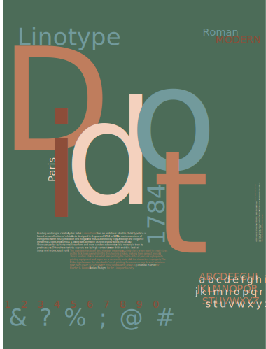

History of Typography Poster
Program: Illustrator
This project consisted of designing a 30-inch by 40-inch poster that would expose the history and facets of one particular font. Because of my passion for publication design, I decided to focus on the font Didot. A classic, dazzling typeface, Didot was first designed in 1784. It was used for display and semi-display and remained a popular font for over 100 years. Through extensive research about the font, the idea was for the poster to be historical yet relevant in today’s day and age. The color palette I chose is reminiscent of the Regency era; different shades of terracotta sit on a bright green background, with some pops of blue here and there.
